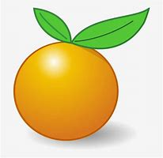

tentangbuah.com
Jeruk

Jeruk adalah buah dari berbagai spesies citrus dalam famili Rutaceae, terutama mengacu pada Citrus x sinensis, yang juga disebut jeruk manis, untuk membedakannya dari Citrus x aurantium terkait, yang disebut jeruk pahit. Jeruk manis bereproduksi secara aseksual, varietas jeruk manis muncul melalui mutasi.
Jeruk adalah hibrida antara jeruk bali (Citrus maxima) dan mandarin (Citrus reticulata). Genom kloroplas, dan karena itu garis ibu, adalah jeruk bali. Jeruk manis telah memiliki genom lengkap yang diurutkan.
Kebanyakan apel bagus dimakan mentah-mentah (tak dimasak), dan juga digunakan banyak jenis makanan pesta. Apel dimasak sampai lembek untuk dibuat saus apel. Apel juga dibuat untuk menjadi minuman sari buah apel.
Khasiat Buah Jeruk :
- Meningkatkan imun
- Meningkatkan kinerja otak
- Mencegah penyakit kanker
- Asam tubuh yang seimbang
- Mencegah stroke
- Mengatasi darah tinggi
Daftar Harga
| Jenis Jeruk | Harga | |
|---|---|---|
| Per Kilo | Per Biji | |
| Jeruk Santang | 14.500 | 2.000 |
| Jeruk Siam Bali | 18.000 | 3.000 |
| Jeruk Medan | 30.000 | 4.500 |
| Jeruk Mandarin | 36.000 | 5.000 |